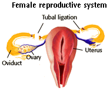
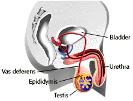

Birth Control Problem Set
Problem 9: Most Popular Method of Birth Control in the United States
Tutorial to help answer this questionWhich of the following methods of birth control is the most popular in the United States?
A. Sterilization B. The Pill C. Diaphragm
Sterilization
| Tubal ligation and vasectomy are surgical procedures that permanently render a person infertile or sterile. They are the most popular methods of birth control in the United States. These are very effective methods, but must be considered permanent and irreversible. |
|
Female sterilization or tubal ligation is the surgical cutting and tying of the fallopian tubes. This surgical procedure requires full anesthesia.
It works by preventing the egg from traveling to the uterus and becoming fertilized. |
 |
|  |
Male sterilization or vasectomy is a simple
procedure in which a piece of each vas deferens
is cut out just above the epididymis and the cut
ends are tied. This procedure is normally done
under local anesthetic in the doctor's office.
Because the sperm stored in the epididymis can no longer flow through the vas deferens, the man's ejaculate does not contain sperm. |


University of Arizona
Tuesday, February 10, 1998
Contact the Development Team
http://www.biology.arizona.edu
All contents copyright © 1998. All rights reserved.